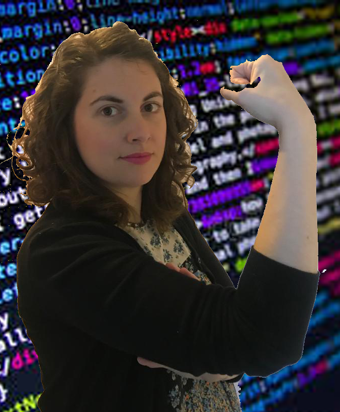

Ana Diz
Empecé a sentir interés por el código en un taller de programación cuando
hice el
Master de Turismo Electrónico, aunque supone un gran cambio y consiente de que no es un reto
para
nada sencillo, tomé la decisión de unirme a esta aventura de poder convertirme en
programadora.

Esther López
Programadora front-end junior in progress. Tras estudiar magisterio y
estar
varios años trabajando en sectores que no tenian nada que ver con mi formación decido
reinventarme y
dar el paso a la programación. ¡Nunca pierdo las ganas de seguir aprendiendo!
Marina Delgado
De Licenciada en Ciencias del trabajo a programadora. ¡Vaya cambio! Y es
que he
visto que la programación está en todo y la aplicación de la tecnología puede resultar
incluso muy
interesante, por lo que decidí que mi sueño era más grande que los miedos que anidaban en mi
cabeza
y me lancé a esta aventura Adalab .
Mercedes Fe
Siempre he sido curiosa y decidida, y desde que supe que yo también
podía
programar lo tuve claro. Así fue como, tras formarme en audiovisuales, llegué a Adalab, con
el
propósito de convertirme en programadora y hacer de ello mi profesión.